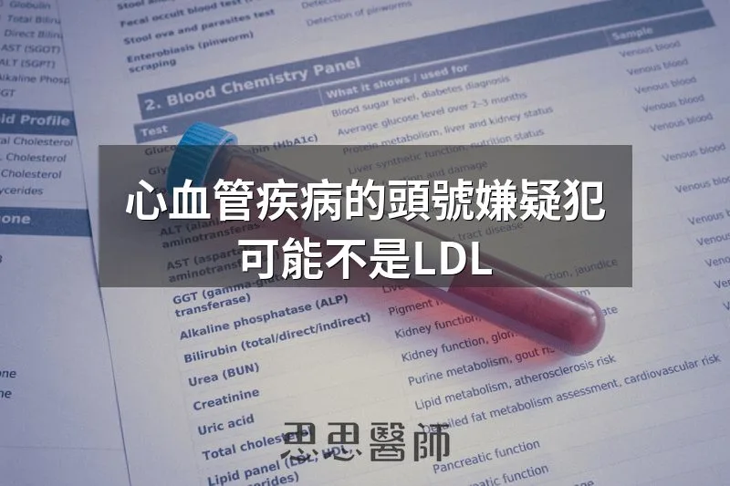

心血管疾病的頭號嫌疑犯，可能不是LDL

門診裡我常遇到這種病人：抽血報告一攤開，LDL 數字漂亮得不得了，整個人一副「我血管很乾淨」的表情。但仔細往下看，血糖偏高、CRP 也悄悄爬升，作息也亂七八糟。這種人的心血管風險，往往比單純 LDL 稍微超標的人更高。這幾年我跟病人解釋心血管風險時，常搬出一個統計工具，叫做風險比（Hazard Ratio，簡稱 HR），因為它講出一件事：LDL 真的沒有我們想像中那麼「一枝獨秀」。
風險比是流行病學研究裡，用來比較「兩組人得某個病的速度差多少倍」的工具。追蹤有危險因子跟沒有危險因子的兩群人好幾年，風險比等於 2，代表前者得病的速度是後者的兩倍；等於 1，代表兩組沒有差別。
LDL 膽固醇會被當成頭號戰犯不是沒有道理，但把它放進風險比的排行榜，跟其他因子並排比較，故事就沒有那麼單純。
2010 年一個涵蓋 16 萬人的大型統合研究（Lancet）發現，校正過其他因子後，CRP（代表慢性發炎）每升高一個標準差，冠心病風險上升 37%（風險比 1.37）；同一篇研究裡，涵蓋 LDL 的非高密度脂蛋白膽固醇，風險只上升 28%（風險比 1.28）。發炎指數，殺傷力超過LDL本身。
胰島素阻抗 更明顯。2012 年一篇彙整 65 個研究、51 萬人的統合分析發現，HOMA-IR（胰島素阻抗指標）最高族群比最低族群，冠心病風險高達 1.64 倍，遠超過同研究裡血糖（21%）跟胰島素（4%）本身的貢獻。胰島素阻抗不只是糖尿病前期的警訊，它本身就是獨立的心血管風險因子。
糖尿病 的數字更誇張。另一篇涵蓋 69 萬人、追蹤超過 800 萬人年的統合分析發現，糖尿病患者得冠心病的風險是非糖尿病者的 2 倍（風險比 2.00），缺血性中風風險更高達 2.27 倍；研究團隊特別指出，LDL 只跟冠心病關係密切，糖尿病卻對好幾種血管疾病都有影響力，殺傷範圍比 LDL 更廣。
不運動呢？2023 年一篇彙整 94 個世代研究、超過 3000 萬人的劑量反應統合分析發現，達到建議運動量的人，全因死亡與心血管死亡風險，只有活動量最低族群的七成左右。長期不運動帶來的風險增幅，跟前面的發炎指數、胰島素阻抗其實是同一個量級。
喝酒 也不例外。2022 年一篇分析英國生物資料庫 37 萬人的孟德爾隨機化研究發現，飲酒量每增加一個標準差，冠狀動脈疾病風險上升約 4 成（勝算比 1.4），心肌梗塞風險上升 37%。研究團隊也直接推翻了「小酌有益心臟」的舊觀念：所有飲酒量風險都是往上走，喝越多風險上升幅度越大，沒有安全下限。
睡眠不足 同樣上榜。一篇追蹤 40 萬中國成人 9 年的世代研究發現，跟每晚睡 7 到 8 小時的人比，每晚只睡 5 小時以下的人，重大冠心病事件風險高出 23%（風險比 1.23），血管疾病死亡風險更高出 34%。長期睡不夠，對心臟的傷害，並不亞於過高的 LDL。
把這幾個數字擺在一起看，我想講的不是「LDL 不重要」，而是「LDL 不是唯一重要的東西」。胰島素阻抗會讓身體製造更多小而密、更容易鑽進血管壁的 LDL 顆粒；慢性發炎會讓斑塊更不穩定；不運動、睡眠不足、飲酒，又會讓胰島素阻抗跟發炎雪上加霜，彼此互相加乘。這也是為什麼我在門診很少只看 LDL 這一個數字，我會建議病人一起檢查空腹胰島素、HOMA-IR、hs-CRP，搭配運動、睡眠、飲酒習慣一起評估。
下次拿到抽血報告，如果 LDL 數字讓你鬆一口氣，不妨多問一句：我的發炎指數呢？胰島素阻抗呢？這禮拜睡得好嗎？運動了幾次？這些問題，可能比那個漂亮的 LDL 數字，更能決定你血管的命運。
1. C-reactive protein concentration and risk of coronary heart disease, stroke, and mortality: an individual participant meta-analysis（Lancet, 2010） (PMID: 20031199, DOI: 10.1016/S0140-6736(09)61717-7)
2. Insulin resistance and risk of incident cardiovascular events in adults without diabetes: meta-analysis（PLoS ONE, 2012） (PMID: 23300589, DOI: 10.1371/journal.pone.0052036)
3. Diabetes mellitus, fasting blood glucose concentration, and risk of vascular disease: a collaborative meta-analysis of 102 prospective studies（Lancet, 2010） (PMID: 20609967, DOI: 10.1016/S0140-6736(10)60484-9)
4. Non-occupational physical activity and risk of cardiovascular disease, cancer and mortality outcomes: a dose-response meta-analysis of large prospective studies（Br J Sports Med, 2023） (PMID: 36854652, DOI: 10.1136/bjsports-2022-105669)
5. Association of Habitual Alcohol Intake With Risk of Cardiovascular Disease（JAMA Network Open, 2022） (PMID: 35333364, DOI: 10.1001/jamanetworkopen.2022.3849)
6. Sleep duration and risk of stroke and coronary heart disease: a 9-year community-based prospective study of 0.5 million Chinese adults（BMC Neurology, 2023） (PMID: 37710209, DOI: 10.1186/s12883-023-03367-4)
（本文由我規劃架構與觀點，並協同 AI 校正與潤飾語句）
 空腹小雞跟思思醫師一起斷食，順便養一隻小雞來養小雞 →
空腹小雞跟思思醫師一起斷食，順便養一隻小雞來養小雞 →
好朋友週信
每週五一封：《健康駭客週報》這集的研究重點，加上家醫專欄這週的新文章。免費，隨時可以退訂。
延伸閱讀

很低的 LDL，也是要找原因
沒有使用降脂藥物但 LDL 仍低於 50 mg/dL 需要往下追，可能反映甲狀腺亢進、肝功能受損或惡性腫瘤等潛在疾病。

因紐特人和心臟病，一個持續了五十年的誤會
因紐特人因低碳飲食無心臟病的說法流傳五十年，但實際研究顯示他們的心血管疾病發生率與其他族群相近甚至更高。

膽固醇 700 維持七年，斑塊是零的特殊案例
一位總膽固醇 705 mg/dL 的男性維持近七年，電腦斷層顯示斑塊體積為 0 mm³，作者以此個案介紹 LMHR 與脂質能量模型。